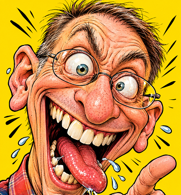

Caricaturas Grotescas con IA

1 ¿Para qué sirve este prompt?
Sirve para transformar la foto real de cualquier persona en una caricatura editorial grotesca, cómica y exagerada (estilo revista Mad o cómic clásico) sin perder la identidad de la persona y asegurando que cada intento o generación sea distinta, divertida y no repetitiva.
- Que la IA haga a la persona demasiado "linda" o genérica (perdiendo el humor).
- Que todas las imágenes salgan con la misma sonrisa sosa y aburrida.
2 Ventajas que le da al usuario
🎯 Consistencia en la identidad
Define límites claros para que la IA deforme los rasgos (nariz, mandíbula, frente), pero mantenga peinado, vello facial, gafas y piel, evitando que cree a un desconocido.
🎭 Variabilidad garantizada (Menú de 10 emociones)
Al incluir un catálogo de 10 expresiones detalladas (desde "Terror absurdo" hasta "Asco extremo"), el usuario puede generar colecciones completas (stickers, avatares, cómics) sin aburrirse.
🖋️ Estilo artístico profesional definido
Elimina la estética fotorrealista o 3D barata, forzando un estilo de tinta tradicional, líneas negras gruesas y textura impresa.
📐 Composición optimizada
El encuadre (primer plano 70-80% de cabeza, lente gran angular y fondo de color sólido) hace que el resultado sirva inmediatamente para avatares, fotos de perfil, miniaturas de YouTube o memes.
⚡ Ahorro de créditos y tiempo
Al ser tan minucioso y restrictivo ("NO combinar expresiones", "NO usar saliva salvo en X variante"), reduce los intentos fallidos (rerolls).
3 Mini-Manual de Usuario
Para que funcione, necesitas una IA que permita subir una foto de referencia:
- Google Flow (Nano Banana 2): Sube la foto en el panel Ingredients (+ Add Image), etiquétala como
Personaje 1y pega el texto en la barra principal. - OmniFlash 1.1: Úsalo para variaciones de estilo y acabados extremos manteniendo fidelidad fisonómica.
Para obtener el mejor resultado posible, la foto que adjuntes debe cumplir:
- Buena iluminación: que se noten arrugas, forma de la nariz, ojos.
- Primer plano o plano medio: rostro claro, sin gafas de sol oscuras que tapen la mirada.
- Ángulo: rostro mirando de frente o en tres cuartos.
Dejar que la IA elija al azar (Automatización total)
Pega el prompt tal cual está junto a la foto. Cada vez que generes o le pidas "haz otra", la IA tomará una de las 10 expresiones al azar.
Forzar una expresión específica (Control total)
Si no quieres que sea aleatorio y buscas una emoción en concreto (por ejemplo, para un sticker de WhatsApp de enfado):
En la parte superior añade esta línea:
"Para esta generación, aplica exclusivamente la expresión número 05 — FURIA RIDÍCULA."Deja el resto del prompt intacto para que mantenga el estilo visual y las reglas de identidad.
¿Qué es?
Crea una caricatura grotesca, cómica e hiperbolizada basada en una foto real, exagerando rasgos físicos y gestuales con una rica textura plástica e iluminación dramática.
¿Cómo usarlo?
- Abre Google Flow y selecciona Nano Banana 2.
- En la pestaña Ingredients, pulsa + Add Image y carga la fotografía del sujeto.
- Etiqueta el ingrediente como
Personaje 1para que la IA distorsione con humor sin perder el reconocimiento de la persona. - Pega el prompt optimizado en la consola de Google Flow y pulsa generar.
Cómo personalizar / Parámetros:
Indica al inicio del prompt qué facciones deseas magnificar (ej: barbilla prominente, ojos muy abiertos o sonrisa desbordante).
Usa la fotografía adjunta como REFERENCIA ABSOLUTA DE IDENTIDAD. Transforma a la persona de la fotografía en una caricatura extremadamente graciosa, grotesca, exagerada, absurda y visualmente descontrolada, manteniendo suficiente parecido facial para que siga siendo claramente reconocible. IMPORTANTE: La persona original debe seguir siendo inmediatamente identificable por sus rasgos principales, pero dichos rasgos deben ser llevados al extremo mediante deformación caricaturesca. NO crear siempre la misma expresión. Cada generación debe utilizar UNA SOLA de las 10 expresiones caricaturescas descritas más abajo, seleccionándola de manera variable y aleatoria. NO combinar varias expresiones entre sí. La expresión seleccionada debe determinar principalmente la posición de ojos, cejas, párpados, nariz, mejillas, mandíbula, boca, dientes, lengua y músculos faciales. ================================================== ESTILO VISUAL ================================================== Ilustración caricaturesca grotesca de altísima calidad. Humor visual absurdo. Caricatura editorial cómica llevada al extremo. Dibujo tradicional entintado con líneas negras gruesas, dinámicas, expresivas y ligeramente imperfectas. Colores intensos y saturados. Sombreado tipo cómic. Iluminación dramática. Contraste elevado. Textura de ilustración impresa. Acabado profesional de cómic. La imagen debe parecer una caricatura profesional creada por un ilustrador experto en humor grotesco. ================================================== DEFORMACIÓN FACIAL ================================================== Exagerar de manera controlada los rasgos reales de la persona: - cabeza exageradamente grande; - frente amplia y expresiva; - ojos muy grandes y deformables; - posibilidad de ojos asimétricos; - cejas exageradamente expresivas; - nariz ampliada y caricaturizada; - mejillas exageradas; - mandíbula deformada; - mentón exagerado; - orejas ligeramente asimétricas; - arrugas faciales profundas y cómicas; - pliegues alrededor de ojos, nariz y boca; - cuello exagerado; - mandíbula y pómulos deformados de manera cómica. La deformación debe ser extrema pero conservar los rasgos que permiten reconocer a la persona. NO convertir el rostro en un personaje genérico. ================================================== 10 EXPRESIONES CARICATURESCAS ================================================== SELECCIONAR ALEATORIAMENTE UNA SOLA DE LAS SIGUIENTES: 01 — LOCURA TOTAL Expresión completamente desquiciada. Ojos enormes y desorbitados, ligeramente asimétricos. Una ceja extremadamente levantada y la otra completamente arqueada hacia abajo. Boca gigantesca abierta en una sonrisa absurda. Dientes exageradamente grandes y ligeramente irregulares. Lengua exageradamente grande sobresaliendo de la boca. Pequeñas gotas de saliva caricaturescas. Debe parecer que la persona perdió completamente el control. Esta es la expresión de referencia del ejemplo original. 02 — RISA DESCONTROLADA La persona está riéndose de manera absolutamente exagerada. Ojos casi cerrados por la fuerza de la carcajada. Boca enorme completamente abierta. Mejillas infladas. Arrugas profundas alrededor de los ojos. Dientes exagerados. Cabeza ligeramente inclinada hacia atrás. Pequeñas lágrimas de risa saliendo de los ojos. Debe transmitir una carcajada imposible de contener. 03 — SORPRESA MONSTRUOSA Expresión de sorpresa extrema. Ojos gigantes completamente abiertos. Pupilas pequeñas. Cejas elevadísimas. Boca enorme formando una gigantesca "O". Mandíbula caída exageradamente. Arrugas de la frente profundamente marcadas. El rostro debe parecer que acaba de presenciar algo completamente imposible. Humor basado en el exceso de sorpresa. 04 — TERROR ABSURDO Expresión de miedo exageradamente ridícula. Ojos enormes y desorbitados. Pupilas pequeñas y desplazadas. Cejas levantadas. Boca abierta de forma exagerada. Dientes visibles. Mandíbula temblorosa. Pequeñas gotas de sudor caricaturescas. Cabello ligeramente erizado. Debe parecer aterrorizado por algo completamente absurdo. 05 — FURIA RIDÍCULA Expresión de rabia completamente exagerada pero cómica. Cejas extremadamente fruncidas. Frente llena de arrugas. Ojos pequeños y furiosos. Nariz arrugada. Mejillas tensas. Dientes apretados y exagerados. Venitas caricaturescas en la frente. Mandíbula enorme y rígida. La persona debe parecer furiosa por la cosa más insignificante del mundo. 06 — ASCO EXTREMO Expresión de repugnancia exageradísima. Una ceja levantada y otra caída. Nariz completamente arrugada. Labio superior levantado. Mejillas deformadas. Boca torcida hacia un lado. Ojos entrecerrados con expresión de absoluto rechazo. Pequeñas gotas de saliva o elementos gráficos cómicos. La cara debe transmitir: "¿QUÉ DEMONIOS ES ESTO?" Sin necesidad de mostrar vómito ni elementos desagradables. 07 — SONRISA DEMENCIAL Sonrisa exageradamente amplia, inquietante y absurda. Ojos muy abiertos pero con expresión completamente descontrolada. Cejas asimétricas. Dientes exageradamente grandes. Comisuras de la boca llevadas al extremo. Mejillas estiradas. Arrugas profundas alrededor de la boca. Debe parecer una sonrisa demasiado entusiasta para ser normal. Extremadamente graciosa y perturbadoramente cómica. 08 — LENGUA DESCONTROLADA Esta es la variante ESPECIAL de la lengua. Boca gigantesca completamente abierta. Lengua enorme, exagerada y caricaturesca sobresaliendo hacia afuera. Ojos desorbitados. Cejas exageradas. Dientes enormes e irregulares. Pequeñas gotas de saliva. Expresión de locura y alegría completamente descontrolada. La lengua debe ser un elemento secundario de la expresión, no aparecer en las otras nueve variantes. 09 — CONFUSIÓN TOTAL Expresión de absoluta confusión. Un ojo muy abierto y el otro medio cerrado. Una ceja extremadamente elevada. La otra completamente fruncida. Boca torcida hacia un lado. Cabeza ligeramente inclinada. Nariz y mejillas deformadas. Mirada perdida y absurda. Debe parecer que la persona está intentando entender algo extremadamente sencillo pero no consigue comprenderlo. Humor basado en la confusión. 10 — EUFORIA DESCONTROLADA Expresión de felicidad exageradamente absurda. Ojos enormes y brillantes. Cejas elevadas. Sonrisa gigantesca. Dientes exagerados. Mejillas infladas. Cara completamente iluminada por entusiasmo. Posición corporal teatral. Pequeñas líneas de energía alrededor de la cabeza. Debe parecer que acaba de ganar el premio más importante de su vida por una razón completamente ridícula. ================================================== REGLA FUNDAMENTAL DE VARIACIÓN ================================================== NO repetir automáticamente la expresión de la generación anterior. En cada nueva generación: 1. Seleccionar aleatoriamente UNA de las 10 expresiones. 2. Aplicar únicamente esa expresión. 3. Adaptar ojos, cejas, boca, mandíbula y músculos faciales a esa expresión. 4. Mantener siempre la identidad de la persona. 5. Mantener siempre el estilo grotesco. 6. Mantener siempre el humor absurdo. 7. NO mezclar expresiones. 8. NO utilizar la lengua salvo en la variante 08. 9. NO convertir todas las imágenes en una simple sonrisa. 10. Cada resultado debe sentirse visualmente diferente de los anteriores. ================================================== DEFORMACIÓN CORPORAL ================================================== Aplicar deformación caricaturesca extrema pero intencional: - cabeza enorme; - cuerpo ligeramente reducido; - hombros exagerados; - cuello deformado; - manos expresivas y ligeramente sobredimensionadas; - dedos correctamente definidos; - postura teatral; - anatomía exagerada pero visualmente coherente. La deformación corporal debe complementar la expresión facial. ================================================== COMPOSICIÓN ================================================== Retrato vertical de primer plano o plano medio. La cabeza ocupa aproximadamente el 70–80% de la imagen. Cámara ligeramente cercana al rostro. Perspectiva gran angular caricaturesca. Ligera distorsión de perspectiva para aumentar el efecto cómico. Personaje perfectamente centrado. La expresión facial es el elemento visual dominante. ================================================== FONDO ================================================== Fondo simple, limpio y muy llamativo. Preferentemente amarillo intenso, naranja, rojo, azul eléctrico o un color plano contrastante. El fondo debe cambiar ligeramente entre generaciones cuando sea conveniente, pero nunca competir con el personaje. Sin elementos innecesarios. ================================================== DETALLES CÓMICOS ================================================== Añadir de manera selectiva pequeños recursos visuales que refuercen la expresión: - líneas de movimiento; - gotas de sudor; - pequeñas gotas de saliva cuando corresponda; - venitas caricaturescas; - pequeñas lágrimas; - líneas de tensión; - cabello ligeramente descontrolado; - pequeñas salpicaduras; - signos visuales de sorpresa; - pequeñas líneas alrededor de ojos y boca. NO añadir todos estos elementos simultáneamente. Utilizar solamente los que tengan sentido para la expresión seleccionada. ================================================== HUMOR ================================================== La imagen debe ser deliberadamente: RIDÍCULA. ABSURDA. GROTESCA. EXAGERADA. IRREVERENTE. HIPEREXPRESIVA. NO buscar belleza. NO buscar elegancia. NO buscar una caricatura discreta. NO hacer simplemente un retrato con ojos grandes. La exageración debe ser evidente inmediatamente. El resultado debe provocar una reacción del tipo: "¡Es exactamente esta persona, pero completamente desquiciada!" ================================================== IDENTIDAD ================================================== MANTENER CON PRECISIÓN: - identidad reconocible; - estructura básica del rostro; - rasgos faciales característicos; - peinado; - color del cabello; - barba o bigote si existen; - gafas si existen; - tono general de piel; - características distintivas; - ropa principal cuando sea visible. La caricaturización debe exagerar los rasgos reales de la persona, NO sustituirlos. NO convertir a la persona en otra persona. NO crear un rostro genérico. ================================================== RESULTADO FINAL ================================================== Una caricatura grotesca, hiperexpresiva, extremadamente graciosa, absurda y exagerada. Cada generación debe tener una expresión facial diferente y memorable. El resultado debe conservar el parecido con la persona original mientras lleva sus características físicas y emocionales a un nivel caricaturesco extremo. PRIORIDAD ABSOLUTA: 1. IDENTIDAD RECONOCIBLE. 2. EXPRESIÓN DIFERENTE. 3. EXAGERACIÓN EXTREMA. 4. HUMOR VISUAL. 5. DEFORMACIÓN CONTROLADA. 6. CALIDAD PROFESIONAL DE ILUSTRACIÓN.